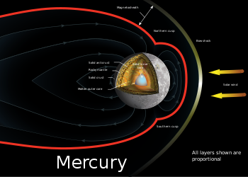

Mercury is the closest planet to the sun, it is among the inner planets. It is the smallest member in the solar system, it is a bit larger then the Moon the natural satellite of the Earth, in size
The temperature is extremely high due to its close proximity to the Sun and slow rotation. The surface temperature is about 160 Celcius
There are craters on the surface due to volcanic erutions. It has no atmosphere. Therefore, these is a high risk of falling asteroids and meteors
Mercury is the smallest planet in the Solar System and the closest to the Sun. Its orbit around the Sun takes 87.97 Earth days, the shortest of all the Sun's planets. It is named after the Roman god Mercurius (Mercury), god of commerce, messenger of the gods, and mediator between gods and mortals, corresponding to the Greek god Hermes (Ἑρμῆς). Like Venus, Mercury orbits the Sun within Earth's orbit as an inferior planet, and its apparent distance from the Sun as viewed from Earth never exceeds 28°.
This proximity to the Sun means the planet can only be seen near the western horizon after sunset or the eastern horizon before sunrise, usually in twilight. At this time, it may appear as a bright star-like object, but is more difficult to observe than Venus. From Earth, the planet telescopically displays the complete range of phases , similar to Venus and the Moon, which recurs over its synodic period of approximately 116 days. The synodic proximity of Mercury to Earth makes Mercury most of the time Earth's closest planet, despite Venus at times approaching Earth closer than any other planet can.
Mercury rotates in a way that is unique in the Solar System. It is tidally locked with the Sun in a 3:2 spin–orbit resonance, meaning that relative to the fixed stars, it rotates on its axis exactly three times for every two revolutions it makes around the Sun. As seen from the Sun, in a frame of reference that rotates with the orbital motion, it appears to rotate only once every two Mercurian years. An observer on Mercury would therefore see only one day every two Mercurian years

Mercury appears to have a solid silicate crust and mantle overlying a solid, iron sulfide outer core layer, a deeper liquid core layer, and a solid inner core. The planet 's density is the second highest in the Solar System at 5.427 g/cm3, only slightly less than Earth's density of 5.515 g/cm3. If the effect of gravitational compression were to be factored out from both planets, the materials of which Mercury is made would be denser than those of Earth, with an uncompressed density of 5.3 g/cm3 versus Earth's 4.4 g/cm3. Mercury's density can be used to infer details of its inner structure. Although Earth's high density results appreciably from gravitational compression , particularly at the core, Mercury is much smaller and its inner regions are not as compressed. Therefore, for it to have such a high density, its core must be large and rich in iron.
The radius of Mercury's core is estimated to be 2,020 ± 30 km (1,255 ± 19 mi), based on interior models constrained to be consistent with the value of the moment of inertia factor given in the infobox. Hence, Mercury's core occupies about 57% of its volume; for Earth this proportion is 17%. Research published in 2007 suggests that Mercury has a molten core. Surrounding the core is a 500–700 km (310–430 mi) mantle consisting of silicates. Based on data from the Mariner 10 and MESSENGER missions, in addition to Earth-based observation, Mercury's crust is estimated to be 35 km (22 mi) thick. However, this model may be an overestimate and the crust could be 26 ± 11 km (16.2 ± 6.8 mi) thick based on an Airy isostacy model. One distinctive feature of Mercury's surface is the presence of numerous narrow ridges, extending up to several hundred kilometers in length. It is thought that these were formed as Mercury's core and mantle cooled and contracted at a time when the crust had  already solidified.
Mercury's core has a higher iron content than that of any other major planet in the Solar System, and several theories have been proposed to explain this. The most widely accepted theory is that Mercury originally had a metal–silicate ratio similar to common chondrite meteorites, thought to be typical of the Solar System's rocky matter, and a mass approximately 2.25 times its current mass. Early in the Solar System's history, Mercury may have been struck by a planetesimal of approximately 1/6 Mercury's mass and several thousand kilometers across. The impact would have stripped away much of the original crust and mantle, leaving the core behind as a relatively major component. A similar process, known as the giant impact hypothesis, has been proposed to explain the formation of the Moon.
Alternatively, Mercury may have formed from the solar nebula before the Sun's energy output had stabilized. It would initially have had twice its present mass, but as the protosun contracted, temperatures near Mercury could have been between 2,500 and 3,500 K and possibly even as high as 10,000 K. Much of Mercury's surface rock could have been vaporized at such temperatures, forming an atmosphere of "rock vapor" that could have been carried away by the solar wind. A third hypothesis proposes that the solar nebula caused drag on the particles from which Mercury was accreting, which meant that lighter particles were lost from the accreting material and not gathered by Mercury
The surface temperature of Mercury ranges from 100 to 700 K (−173 to 427 °C; −280 to 800 °F) at the most extreme places: 0°N, 0°W, or 180°W. It never rises above 180 K at the poles, due to the absence of an atmosphere and a steep temperature gradient between the equator and the poles. The subsolar point reaches about 700 K during perihelion (0°W or 180°W), but only 550 K at aphelion (90° or 270°W). On the dark side of the planet, temperatures average 110 K. The intensity of sunlight on Mercury's surface ranges between 4.59 and 10.61 times the solar constant (1,370 W·m−2).
Although the daylight temperature at the surface of Mercury is generally extremely high, observations strongly suggest that ice (frozen water) exists on Mercury. The floor of deep craters at the poles are never exposed to direct sunlight, and temperatures there remain below 102 K, far lower than the global average. This creates a cold trap where ice can accumulate. Water ice strongly reflects radar, and observations by the 70-meter Goldstone Solar System Radar and the VLA in the early 1990s revealed that there are patches of high radar reflection near the poles. Although ice was not the only possible cause of these reflective regions, astronomers think it was the most likely.
The icy regions are estimated to contain about 1014–1015 kg of ice, and may be covered by a layer of regolith that inhibits sublimation. By comparison, the Antarctic ice sheet on Earth has a mass of about 4×1018 kg, and Mars's south polar cap contains about 1016 kg of water. The origin of the ice on Mercury is not yet known, but the two most likely sources are from outgassing of water from the planet's interior or deposition by impacts of comets.
Mercury is too small and hot for its gravity to retain any significant atmosphere over long periods of time; it does have a tenuous surface-bounded exospher containing hydrogen, helium, oxygen, sodium, calcium, potassium and others at a surface pressure of less than approximately 0.5 nPa (0.005 picobars). This exosphere is not stable—atoms are continuously lost and replenished from a variety of sources. Hydrogen atoms and helium atoms probably come from the solar wind, diffusing into Mercury's magnetosphere before later escaping back into space. Radioactive decay of elements within Mercury's crust is another source of helium, as well as sodium and potassium.
MESSENGER found high proportions of calcium, helium, hydroxide, magnesium, oxygen, potassium, silicon and sodium. Water vapor is present, released by a combination of processes such as: comets striking its surface, sputtering creating water out of hydrogen from the solar wind and oxygen from rock, and sublimation from reservoirs of water ice in the permanently shadowed polar craters. The detection of high amounts of water-related ions like O+, OH−, and H3O+ was a surprise. Because of the quantities of these ions that were detected in Mercury's space environment, scientists surmise that these molecules were blasted from the surface or exosphere by the solar wind.